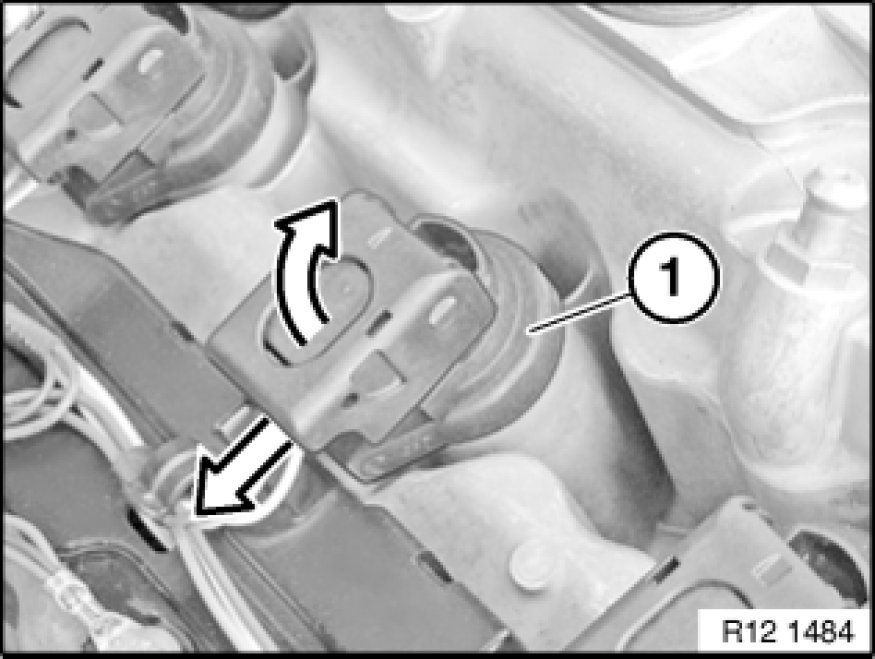
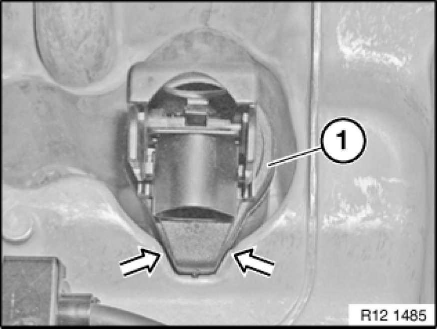
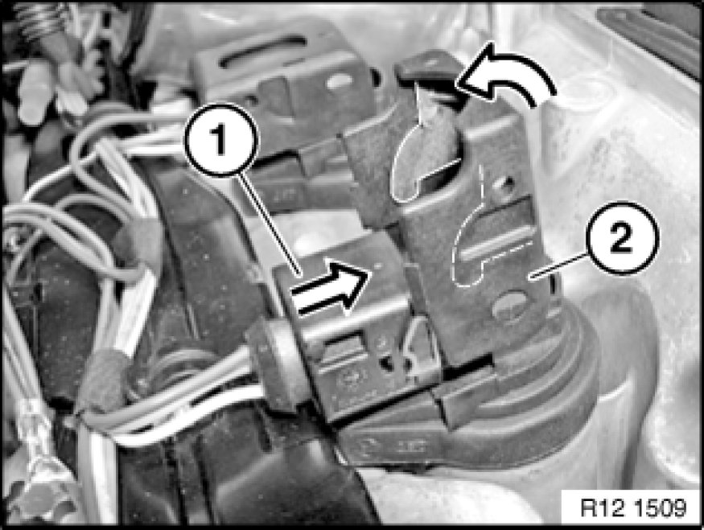
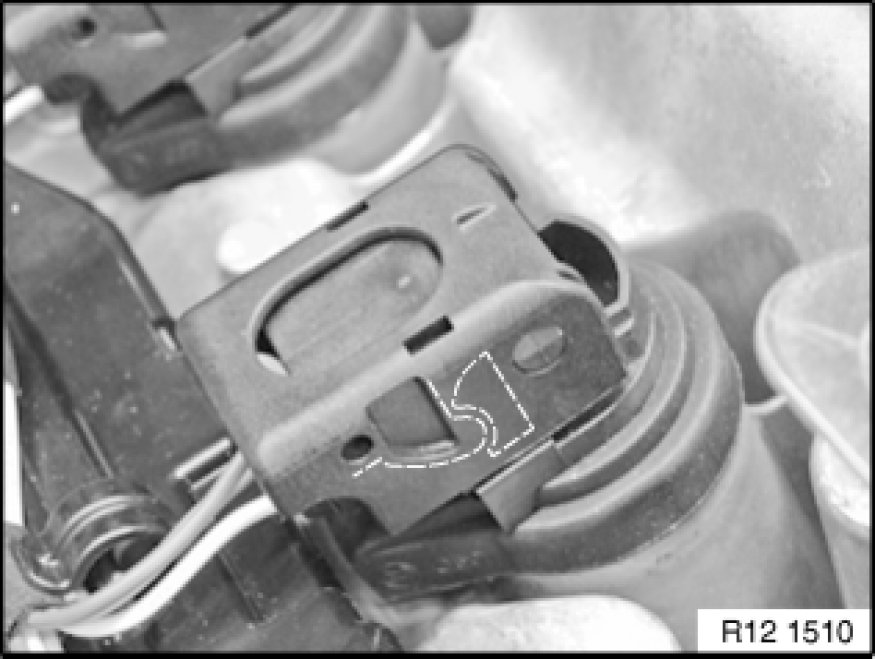

Ignition Coil: Service and Repair
12 13 511 - Replacing ignition coils (N52/N52K/N51)

Necessary preliminary tasks:
- Read out fault memory of DME control unit.
- Check stored fault messages
- Switch off ignition
- Remove ignition coil cover

Unlock plug retainer of ignition coil (1) and disconnect plug.
Pull ignition coil (1) up and out.
This procedure is applicable to all ignition coils.

Installation:
Check that rubber seal of ignition coil (1) is correctly seated.

Installation:
Push plug (1) with plug retainer (2) open onto ignition coil.
Carefully close plug retainer (2) in direction of arrow.

Installation:
The plug retainer must snap into place without great effort.

Note:
Now clear the fault memory.